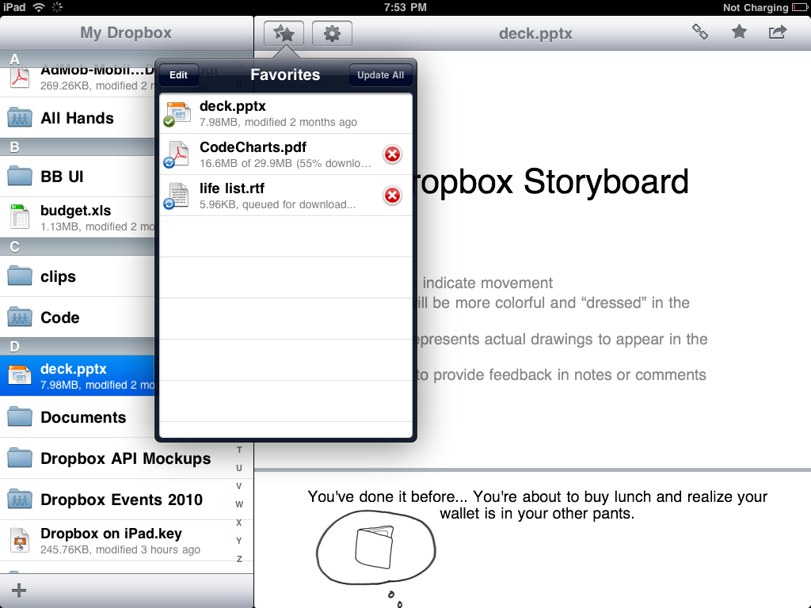
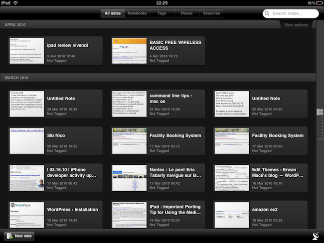
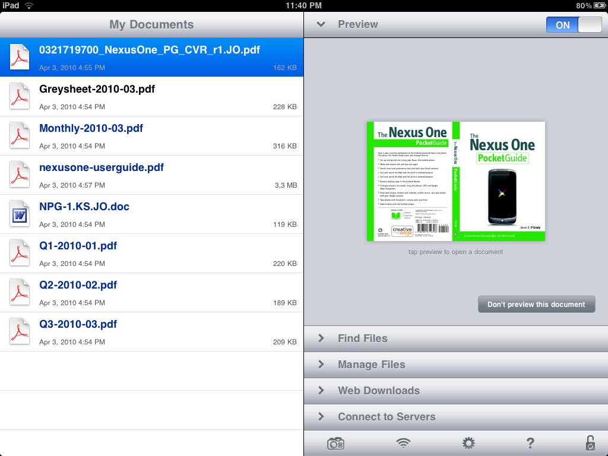
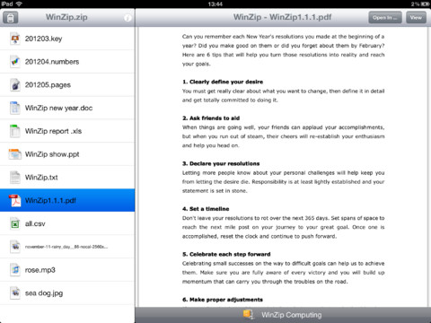
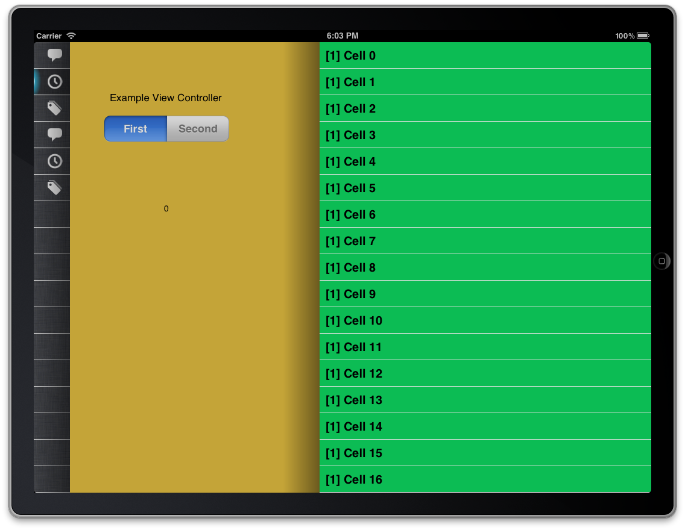

iOS Dosya Yönetim Sistemi ve Online/Offline Dosya Yükleme
Created by Emrah Ayanoglu / @emrahayanoglu
Konular
- Ornek Dosya Uygulamaları
- EFB Projesi
- Basit Dosya İşlemleri
- Multithread iOS
- Zip Islemleri
- Online Dosya Yükleme
- Offline Dosya Yükleme
- Sonuç
Dropbox
Evernote
GoodReader
WinZip
EFB Projesi
- Pilotların yaşamlarını kolaylaştırmak amacıyla başlatıldı
- Dokumanların aktarımı ve bazı hesaplamalar iPad tarafında gerçekleştiriliyor
EFB Projesi
EFB Projesi
EFB Projesi

Dosya Islemleri
NSFileManager oluşturmak
NSFileManager *filemgr;
filemgr = [NSFileManager defaultManager];Dosya Olup Olmama Kontrolu
if ([filemgr fileExistsAtPath: @"/tmp/myfile.txt" ] == YES)
NSLog (@"File exists");
else
NSLog (@"File not found");Dosya Islemleri
NSString'ten Dosya Olusturmak
NSArray *paths = NSSearchPathForDirectoriesInDomains(NSDocumentDirectory, NSUserDomainMask, YES);
NSString *documentsDirectory = [paths objectAtIndex:0]; // Documents klasorune ulasmak
NSError *error;
BOOL succeed = [myString writeToFile:[documentsDirectory stringByAppendingPathComponent:@"myfile.txt"]
atomically:YES encoding:NSUTF8StringEncoding error:&error];
if (!succeed){
// Error durumu
}Klasör Islemleri
Uygulamanın Dokuman Klasorune Erisim
NSArray *dirPaths;
NSString *docsDir;
dirPaths = NSSearchPathForDirectoriesInDomains(NSDocumentDirectory,
NSUserDomainMask, YES);
docsDir = [dirPaths objectAtIndex:0];Klasör Islemleri
Yeni Klasor Oluşturmak
newDir = [docsDir stringByAppendingPathComponent:@"data"];
if ([createDirectoryAtPath:newDir withIntermediateDirectories:YES attributes:nil error: NULL] == NO)
{
// Klasor Olusturulamadi
}Klasör Silmek
newDir = [docsDir stringByAppendingPathComponent:@"data"];
if ([filemgr removeItemAtPath: newDir error: nil] == NO)
{
// Klasor Silinemedi
}Performans Hileleri
- Ne kadar az dosya işlemleri yaparsanız o kadar iyi :)
- Buffer Boyutu
uint8_t *buffer = malloc(chunkSize * sizeof(uint8_t));
do{
NSUInteger bytesCopied = [rep getBytes:buffer fromOffset:offset length:chunkSize error:nil];
offset += bytesCopied;
NSData *data = [[NSData alloc] initWithBytes:buffer length:bytesCopied];
[file writeData:data];
} while(offset < length);UI Kutuphane Secenekleri
PSStackedView
Multithread iOS
Multithread aynı anda birden çok işlemi gerçekleştiren yapıların, uygulamaların kullandığı yöntemdir
Peki Ne Zaman Kullanmalıyız?
- Network Islemleri
- Dosya Islemleri
- Resim Islemleri
Multithread iOS
Peki Hangi Kutuphaneleri Kullanabiliriz (iOS Native Libraries)
- NSNotifications
- Grand Central Dispatch (*)
NSNotications
Önce NSNotification oluşturarak yollayalım
[[NSNotificationCenter defaultCenter] postNotificationName:
@"org.mobilist.dataRead" object:self];
viewDidLoad'un sonuna ekleyerek Asenkron olarak calıştırılabilir
[[NSNotificationCenter defaultCenter] addObserver:self selector:@selector(dataRead:)
name:@"org.mobilist.dataRead" object:nil];Grand Central Dispatch
Oncelikle ilgili header'i ekliyelim ve kuyruk yapımızı oluşturalım
#import <dispatch/dispatch.h>
dispatch_queue_t backgroundQueue;
backgroundQueue = dispatch_queue_create("com.mobilist.dataRead.bqueue", NULL);Arka Thread'de calışacak olan kodu yazalım
dispatch_async(backgroundQueue, ^(void) {
[self readDataFromURL:sourceURL];
});UI Thread'de calışacak olan kodu yazalım
dispatch_async(dispatch_get_main_queue(), ^(void) {
[delegate dataAvailable:data];
});Zip Islemleri
iOS'ta Zip Işlemleri MiniZip ve ZipArchive kütüphaneriyle kolayca gerçekleşmektedir.
Dosya Sıkıştırma Işlemleri
NSArray *paths = NSSearchPathForDirectoriesInDomains(NSDocumentDirectory, NSUserDomainMask, YES);
NSString *documentsDirectory = [paths objectAtIndex:0];
NSString *tmpPathToFile = [documentsDirectory stringByAppendingPathComponent:@"mobilist1.png"];
NSString *zipFileTo = [documentsDirectory stringByAppendingPathComponent:@"mobilist.zip"];
ZipArchive *zip = [[ZipArchive alloc] init];
BOOL result = [zip CreateZipFile2:zipFileTo];
ret = [zip addFileToZip:tmpPathToFile newname:@"mobilist2.png"];
BOOL success = [zip CloseZipFile2];Zip Islemleri
Dosyaları Çıkartmak
NSString *filepath = [[NSBundle mainBundle] pathForResource:@"mobilist" ofType:@"zip"];
ZipArchive *zipArchive = [[ZipArchive alloc] init];
[zipArchive UnzipOpenFile:filepath Password:@"12345"];
[zipArchive UnzipFileTo:pathToDirectory overWrite:YES];
[zipArchive UnzipCloseFile];Online Dosya Yükleme
Herhangi bir web kaynağından iOS tarafına dosya aktarımı birden çok yolla gerçekleşebilir
- CFNetwork (iOS)
- NSURLRequest (iOS)
- AFNetworking (Matt & Scott)
NSURLRequest
Dosya Yükleme
Öncelikle NSURLConnection oluşturalım
NSMutableURLRequest *theRequest = [NSMutableURLRequest
requestWithURL:reqURL];
NSURLConnection *theConnection = [[NSURLConnection alloc]
initWithRequest:theRequest delegate:self];didReceiveData metodunu tamamlayalım
[receivedData appendData:data];
unsigned char byteBuffer[[receivedData length]];
[receivedData getBytes:byteBuffer];
NSInteger receivedLen = [data length];
bytesReceived = (bytesReceived + receivedLen);NSURLRequest
Ve son olarak bağlantımızı connectionDidFinishLoading metoduyla bitirelim
NSArray *paths = NSSearchPathForDirectoriesInDomains
(NSDocumentDirectory, NSUserDomainMask, YES);
NSString *documentsDirectory = [paths objectAtIndex:0];
NSString *pdfPath = [documentsDirectory
stringByAppendingPathComponent:@"mobilist.txt"];
unsigned char byteBuffer[[receivedData length]];
[receivedData getBytes:byteBuffer];
[self.receivedData writeToFile:pdfPath atomically:YES];AFNetworking
Dosya Yükleme
Öncelikle Bağlantı bilgilerimizi oluşturalım
NSURLRequest *request = [NSURLRequest
requestWithURL:[NSURL URLWithString:@"..."]];
AFHTTPRequestOperation *operation = [[[AFHTTPRequestOperation alloc]
initWithRequest:request] autorelease];Dosya Işlemini Tamamlayalım
NSArray *paths = NSSearchPathForDirectoriesInDomains(NSDocumentDirectory, NSUserDomainMask, YES);
NSString *path = [[paths objectAtIndex:0] stringByAppendingPathComponent:@"filename"];
operation.outputStream = [NSOutputStream outputStreamToFileAtPath:path append:NO];
[operation setCompletionBlockWithSuccess:^(AFHTTPRequestOperation *operation, id responseObject) {
NSLog(@"Dosya başarıyla yüklendi: %@", path);
} failure:^(AFHTTPRequestOperation *operation, NSError *error) {
NSLog(@"Hata: %@", error);
}];
[operation start];Offline Dosya Yükleme
Sonuç
- Artık daha kompleks iOS uygulamaları yapılmaktadır
- Dosya Işlemleri birçok uygulamada mevcuttur
- Gerekli performans hileleri ve Multithread mantığı dosya işlemleri içinde mevcuttur
- Online ve Offline Dosya Aktarımı, dosya uygulamalarının olmazsa olmazıdır